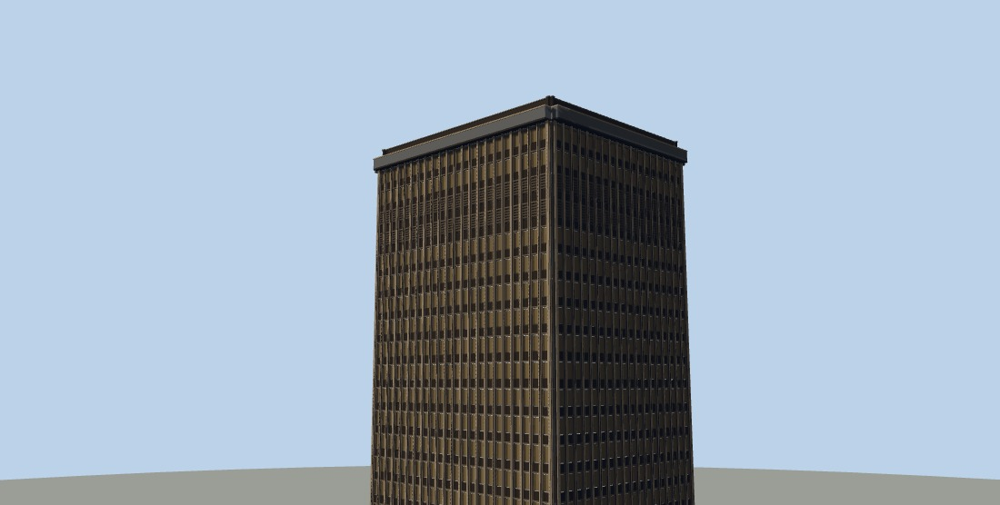

25
25 5
5 9
9 10
10 20
20 23
231
Seagram Curtain Wall
TOWERS · intl · 34×28 m, 40 storeys
Three-quarter — the honest single frame
Seagram, 1958. Bronze mullions on an absolutely regular grid, a plaza, a lobby set back behind free-standing columns. No ornament anywhere — it survives on proportion alone.
As a city: A corporate downtown. The three siblings are the variations Mies's imitators made: travertine spandrels, a black-steel version, a white-marble civic slab.
From the pavement — the entrance

The crown — the whole identity at skyline distance| Crown above the bare shell | +3.5 m | Tallest point | 131.5 m |
| Things breaking the roofline | 9 | Triangles | 68,000 |
| Merged deco boxes (free) | 5666 | Minted meshes (not) | 4 |